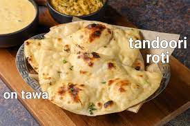

Shahi paneer
Ingredients
- Paneer
- Cream
- Tomato
- Spice
Recipe
- Step 1: Chop all the veggies and make almond-cashew paste
- Step 2:Prepare onion-tomato gravy using curd
- Step 3:Add paneer cubes in the gravy and cook for 3-5 minute
- Step 4:Garnish and serve
Daal Makhni
Ingredients
- Coriander
- Dry Mango
- Onion Flakes
- Cardamom green
Recipe
- Step 1: Soak both ¾ cup whole urad dal (whole black gram) and ¼ cup rajma (kidney beans) overnight in enough water for 8 to 9 hours.
- Step 2:Rinse the urad lentils and rajma legumes a couple of times in water
- Step 3: Rinse the urad lentils and rajma legumes a couple of times in water
- Step 4:Add 3 cups water and stir well.

Butter Roti
Ingredients
- 2 cups wheat flour
- half cup maida
- 1 no egg
- 3 tsps oil
- to taste salt
- 50 gms butter
Recipe
- Step 1: Make a soft dough with all ingredience except butter and maida
- Step 2:Keep 30 min
- Step 3: Make a medium boll and spread it like chappathy
- Step 4:In a tawa grill it and top with butterw
